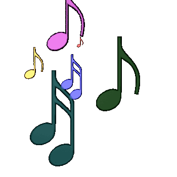

Melon's Music Room

This is a place for internet music and cyber beats...
My audio setup:
- Pioneer A-10 Amp
- Schiit Audio Modi 2 DAC (Its really good!)
- Q Acoustics 3020 Speakers
- AKG 702 Headphones
- Macbook Pro running Audirvana
- Project Elemental Record Player
- Rotel RT-824 Radio
- Akai GX-220 Reel to Reel
- Pioneer CT-X420W Cassette Deck
*** Melon's Song Pick ***
The Best Music (20/7/17):
- Rotten by The Naked And Famous
- Supercut by Lorde
- Master of None by Beach House
- Family and Genus by Shakey Graves
- With or Without You by U2
The Best Music (13/6/17):
- Fly Away by The Fat Rat
- Space Age Love Song by A Flock of Seagulls
- Perfect Places by Lorde
- Wingtip by Walls
- I Like to Take My Time by Mister Rogers
The Best Music (23/4/17):
- Counting Down the Days by Above and Beyond
- Tonight My Baby's Coming Home by Barbara Mandrell
- Amos Moses by Jerry Reed
- Good Day by Yellow Claw
- Mr Watson by Cruel Youth (BKAYE Remix)
The Best Music (6/2/17):
- Three AM by Brock Berrigan
- Yeah Yeah Yeah by Kognitif
- Young Hearts by BUNT
- Stonecold (BKAYE Remix) by machineheart
- Sweet Child by Alex Cruz
The Best Music (28/11/16):
- Second Guess (KV Remix) by Ashworth
- Alarm (Marshmello Rmx)by Anne Marie
- California by Grimes
- Young Blood - Naked and Famous
- Millionaire (Allan W Remix) by Cash Cash
The Best Music (16/10/16):
- Love on Me by Galantis
- Everybody by OMFG
- Changing of the seasons by TDCC
- Laura - Max Manie
- Bonfire by Felix Jaehn
The Best Music (20/8/16):
- Sk8er Boi by Avril Lavigne
- I Wish I knew how it would feel to be free by Nina Simone
- The Stable Song by Gregory Alan Isakov
- Timber - Pitbull
- The Power of Love by Huey Lewis
The Best Music (20/7/16):
- Hello by OMFG
- Wannabe by Spice Girls
- Perfect Two by Vau Boy
- Jelly - OMFG
- Halcyon On and On by Orbital
SoundCloud is full of groovy beats
Very good Nightcores on the YouTube web video service
Looking for more tunes? Check out this site for free music streams. SomaFM